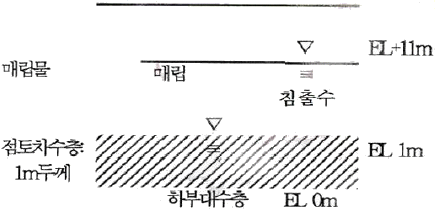
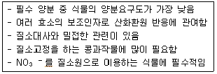
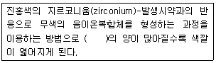
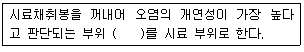
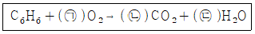
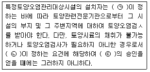
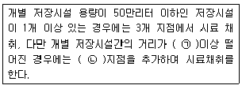
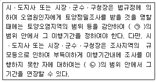

토양환경기사 (2015-05-31 기출문제)
1과목: 토양학개론
1. 100cm3 core sampler로 채취한 토양의 무게가 180g 이었다.(core 무게 제외). 이 토양을 1⑤℃에서 건조한 무게가 150g 이라면 이 토양의 중량수분함량과 용적밀도(가밀도)를 모두 바르게 계산한 것은? (단, 중량수분함량은 분석값의 수분 보정을 위한 토양오염공정시험기준 상의 수분함량을 의미하지는 않음)
- 중량수분함량(17%), 용적밀도(1.5g/cm3)
- 중량수분함량(17%), 용적밀도(1.8g/cm3)
- 중량수분함량(20%), 용적밀도(1.5g/cm3)
- 중량수분함량(20%), 용적밀도(1.8g/cm3)
(정답률: 66%)

2. 미나마타병의 원인 물질로 신경계통에 장애를 주어 언어, 지각장애 등을 유발하는 오염물질은?
- 카드뮴
- 비소
- 수은
- PCB
(정답률: 87%)
3. 그림과 같이 매립지 저면은 두께가 1m인 점토차수층(liner)으로 되어 있다. 지금 침출수의 평균 수두가 해발표고 11m 이고 점토차수층 하부에 분포된 대수층의 평균수두가 해발 1m이며 점토층의 유효 공극율은 0.2, 수직 투수계수 10-7cm/sec 일 때, 침출수가 점토 차수층을 통화하는데 소요되는 시간은? (단, 침출수는 점토차수층과 반응을 하지 않는다고 가정)

- 약 132일
- 약 231일
- 약 552일
- 약 1034일
(정답률: 66%)
4. 지하수 상ㆍ하류 두 지점의 수두차 1.6m, 두 지점 사이의 수평거리 520m, 투수계수 300m/day 일 때, 대수층의 두께 3.8m, 폭 1.5m인 지하수의 유량은?
- 4.28m3/day
- 5.26m3/day
- 6.38m3/day
- 7.46m3/day
(정답률: 81%)
5. NAPLs애 곤한 설명으로 옳지 않은 것은?
- 물에 쉽게 용해되지 않고 섞이지 않아 자연상에서 물과 분리된 유체의 형태로 존재하는 것을 말한다.
- TCE는 LNAP에 해당한다.
- 톨루엔은 LNAP에 해당한다.
- Cholrophenols은 DNAPL에 해당한다.
(정답률: 84%)
6. 지하수 환경으로 유입된 오염물질이나 용질이 지하수의 공극유속(Pore water velocity)과 같은 속도로 움직이는 것을 뜻하는 것은?
- 이류
- 수리분산
- 수리확산
- 평류
(정답률: 93%)
7. 토양의 용적비중이 1.17이고, 입자비중이 2.55일 때 토양의 공극률은?
- 약 41.1%
- 약 45.9%
- 약 51.1%
- 약 54.1%
(정답률: 83%)
8. 다음 토양목에 관한 설명과 거리가 먼 것은?
- Vertisol은 유기물함량이 높은 표토가 검은 빛의 토양으로 화산재 토양이 해당된다.
- Oxisol은 풍화와 용탈이 매우 심하게 일어나는 고온 다습한 열대기후지역에서 발달한다.
- Entisol은 토양의 발달과정이 거의 진행되지 않은 토양이다.
- Ultisol은 습한 지역에서도 발달하며, 저염기 포화도를 가진다.
(정답률: 74%)
9. 다음 중 토양오염의 특성과 거리가 먼 것은?
- 지속성
- 시차성
- 잔류성
- 광역성
(정답률: 73%)
10. 토양오염은 오염물질의 특이성에 따라 다르게 나타난다. 유기오염물질의 특성 인자와 가장 거리가 먼 것은?
- 용해도적
- 증기압
- 옥탄올-물 분배계수
- 분해상수
(정답률: 83%)
11. 다음 중 비점오염원(non point contaminant source)으로 가장 적합한 것은?
- 축산 배수 배출원
- 공단 사업폐수 배출원
- 도로 노면 배수
- 유류저장고
(정답률: 94%)
12. 산성우의 토양에 대한 영향으로 틀린 것은?
- 토양 용액 용존 유기물 농도의 감소
- 양이온, 주로 Ca2+, Mg2+의 용탈 증대
- HCO3- 농도의 감소
- AIPO4 용출에 따른 토양 용액 PO4 농도 증대
(정답률: 79%)
13. 옥탄올-물 분배계수에 관한 설명으로 옳지 않은 것은?
- 옥탄올-물 두 환경에서 옥탄올 층의 화학물질 농도와 물 층의 화학물질 농도의 비로 정의된다.
- 적은 양의 데이터로부터 결정될 수 있으므로 매우 폭넓게 이용된다.
- 옥탄올-물 분배계수의 값이 큰 화학물질은 친수성이며 일반적으로 자연환경에서 이동성이 좋다.
- 수생 유기체에 의해 화학물질이 얼마나 소모될 지를 알려주는 중요한 지표이다.
(정답률: 85%)
14. 토양에 존재하는 이온의 반경별 크기가 큰 순서대로 나열된 것은?
- Ba++＞Sr++＞Ca++＞Mg++
- Ba++＞Ca++＞Sr++＞Mg++
- Ca++＞Ba++＞Sr++＞Mg++
- Ca++＞Ba++＞Mg++＞Sr++
(정답률: 80%)
15. 지하수가 가장 많이 이용(년 이용량 기준)되는 용도는?
- 산림용수
- 생활용수
- 공업용수
- 발전용수
(정답률: 85%)
16. 유기물 4%, 유기탄소 2%, 전질소 10000mg/kg, 질산태질소 5000mg/kg, 암모늄태질소 5000mg/kg을 함유하고 있는 토양의 탄질률(C/N ratio)은?
- 1
- 2
- 4
- 8
(정답률: 63%)
17. 식물에 필요한 필수 양분 중 아래와 같은 특성을 갖는 것은?

- Co
- Mo
- Ni
- S
(정답률: 80%)
18. 다음 토양에서 질소의 순환에 대한 설명 중 맞는 것은?
- 질산화작용에 의해 생성된 질산이온 또는 토양에 첨가된 질산이온은 토양에 흡착되어 이동성이 작은 양이온이 된다.
- 토양 유기물의 탈질반응은 pH 7.5~8.3 범위의 약알칼리조건을 필요로 한다.
- 유기물의 NO2-, NO3-로의 변환을 질소의 유기화 과정이라 한다.
- 표토부근의 토양내 존재하는 총질소의 90%이상이 유기질소형태로 존재한다.
(정답률: 59%)
19. 2:1형 점토 광물로 수분함량에 따라 팽창-수축이 심하게 일어나며 양이온 교환능력과 비표면적이 큰 광물은?
- 몽모리오나이트(montmorillonite)
- 카올리나이트(kaolinlte)
- 할로이사이트(halloysite)
- 클로라이트(chlorite)
(정답률: 89%)
20. 난분해성 유기화학 물질과 가장 거리가 먼 것은?
- 가지구조가 많은 화합물
- 분자 내에 많은 수의 할로겐 원소를 함유하는 화합물
- 물에 대한 용해도가 높은 화합물
- 원자의 전하차가 큰 화합물
(정답률: 92%)
2과목: 토양 및 지하수 오염조사기술
21. 정도관리요소인 검정곡선 중 상대검정곡선법의 내부표준 물질에 관한 설명으로 옳은 것은?
- 상대검정곡선법은 시험 분석하려는 성분과 물리, 화학적으로 성질은 유사한 시료에는 없는 순수물질을 내부표준물질로 선택한다.
- 상대검정곡선법은 시험 분석하려는 성분과 물리, 화학적으로 성질은 유사한 시료에 함유된 순수물질을 내부표준물질로 선택한다.
- 상대검정곡선법은 시험 분석하려는 성분과 물리, 화학적으로 성질이 다르며 시료에 함유된 순수물질을 내부표준물질로 선택한다.
- 상대검정곡선법은 시험 분석하려는 성분과 물리, 화학적으로 성질이 다르고 시료에는 없는 순수물질을 내부표준물질로 선택한다.
(정답률: 78%)
22. 지하매설저장시설내 배관으로부터 2m지점에서 토양시료를 채취하였다면, 토양시료채취지점에서 최대한 시료채취 깊이로 적절한 것은?
- 1m
- 2m
- 3m
- 4m
(정답률: 81%)
23. 다음의 토양오염 위해성 평가 수행 절차 중 가장 먼저 수행하여야 하는 단계는?
- 위해도 결정
- 노출경로 경정
- 조치 계획 작성
- 정화 목표치 설정
(정답률: 73%)
24. 기체크로마트그래프를 적용하여 석유계 총탄화수소를 측정할 때 정량한계는?
- 석유계총탄화수소 5.0mg/kg
- 석유계총탄화수소 10.0mg/kg
- 석유계총탄화수소 25.0mg/kg
- 석유계총탄화수소 50.0mg/kg
(정답률: 62%)
25. 유도결합플라즈마-원자발관분광법으로 카드뮴을 측정할 때 정량 한계는?
- 0.02mg/kg
- 0.⑤mg/kg
- 0.1mg/kg
- 0.5mg/kg
(정답률: 58%)
26. 유도결합플라스마-원자발광분광법에서 플라스마 가스로 사용되는 가스의 종류로 가장 적절한 것은?
- 수소
- 질소
- 아르곤
- 헬륨
(정답률: 76%)
27. 토양환경평가방법 및 절차 단계 중 1단계(기초조사)에서 이루어지는 과정내용과 가장 거리가 먼 것은?
- 조사계획 수립
- 자료 조사
- 방문 조사
- 청취 조사
(정답률: 59%)
28. 자외선/가시선 분광법으로 사안을 측정하는 방법에 대한 설명으로 옳은 것은?
- 잔류염소가 함유된 질산은을 넣어 제거한다.
- pH2 이하의 산성에는 EDTS를 널고 증류한다.
- 유지류가 함유된 시료는 pH4 이하로 조절하여 클로로포름을 넣어 섞고 수층을 분리한다.
- 유지류가 함유된 시료는 초산암모늄 용액을 첨가하여 제거한다.
(정답률: 58%)
29. 기기분석 방법과 분석항목이 잘못 짝지어 있는 것은?
- 기체크로마토그래피-유기인화합물
- 자외선/가시선 분광법 - 시안
- 원자흡수분광광도법- 비소
- 흡광광도법 - PCD
(정답률: 59%)
30. 다음 농도표시 중 농도가 상대적으로 가장 낮은 것은? (단, 비중은 1.0기준)
- 0.01ppm
- 1mg/L
- 100ppm
- 1mg/kg
(정답률: 84%)
31. 유리전극법으로 수소이온농도를 측정할 때 간섭물질에 관한 설명으로 옳지 않은 것은?
- 토양을 오랫동안 방치하면 미생물의 작용으로 탄산가스가 발생하여 pH가 낮아질 수 있다.
- 유리전극은 일반적으로 색도, 탁도 등에 간섭을 받는다.
- 토양 중 염류의 농도가 높아지면 pH값이 낮아지는 경우가 있다.
- pH는 온도변화에 따라 영향을 받는다.
(정답률: 75%)
32. 토양오염도검사방법 중 일반지역의 시료채취지점에 대한 설명이 옳은 것은?
- 농경지의 경우 시료채취지점을 대상지역내에서 중심지점 1개와 주변 4반위의 5~10m 거리에 있는 1개 지점씩 총 5개 지점을 선정한다.
- 공장지역의 경우 1개 지점씩 총 5개 지점을 선정한다.
- 매집지역의 경우 시료채취지점을 대상지역 내에서 중심지점 1개와 주변 4반위의 5~10m 거리에 있는 1개 지점씩 총 5개 지점을 선정한다.
- 시가지지역의 경우 시료채취지점을 대상지역 내에서 5~6m 간격으로 지그재그형으로 5~10개 지점을 선정한다.
(정답률: 64%)
33. 다음은 어떤 물질의 자외선/가시선 분광법에 관한 설명이다. ( )안에 들어갈 물질로 옳은 것은?

- 시안
- 불소
- 아연
- 구리
(정답률: 75%)
34. 저장물질이 있는 누출검사대상시설의 기상부의 누출검사 시험법인 마감압 측정방법으로 옳지 않은 것은?
- 시험을 위한 진공속도는 매분 100mmHg 미만이 되도록 한다.
- 매 5분마다 측정된 압력변화값은 자동으로 기록되도록 한다.
- 누출여부에 대한 추가확인을 위하여 마이크로폰 등 추가적인 도구를 사용할 수 있다.
- 압력 안정화 유지시간 이후부터 매 5분마다 60분 또는 70분 동안의 압력 변화를 측정한다.
(정답률: 74%)
35. 다음은 토양오염관리대상시설지역에서 시료의 채취 및 보관에 대한 설명이다. ( )안에 옳은 내용은? (단, 봉이 들어있는 타격식, 나선식 토양시추장비 기준)

- ±5cm
- ±10cm
- ±15cm
- ±30cm
(정답률: 81%)
36. 흡광과도 측정에서 투과율이 10% 일 때의 흡광도는?
- 0.7
- 0.8
- 0.9
- 1.0
(정답률: 74%)
37. 일반지역의 토양오염도 검사를 위해 채취한 시료 보관에 대한 내용 중 틀린 것은?
- 채취한 토양시료가 불소 시험용인 경우는 폴리에틸렌봉지에 넣어 보관한다.
- 채취한 토양시료가 유기물질 시험용인 경우는 폴리에틸렌봉지에 넣어 보관한다.
- 채취한 토양시료가 수은 시험용 시료인 경우는 입구가 넓은 유리병에 넣어 보관한다.
- 채취한 토양시료가 시안 시험용 시료인 경우는 넓은 유리병에 넣어 보관한다.
(정답률: 61%)
38. 저장물질이 있는 지하매설 저장시설에 대한 기상부 누출검사 적용기준으로 옳은 것은?
- 기상부 누출검사는 20℃ 점도 150cSt미만, 내용적 10,000L 미만의 액체를 저장하는 지하매설저장시설에 적용한다.
- 기상부 누출검사는 20℃ 점도 150cSt미만, 내용적 100,000L 미만의 액체를 저장하는 지하매설저장시설에 적용한다.
- 기상부 누출검사는 20℃ 점도 200cSt미만, 내용적 10,000L 미만의 액체를 저장하는 지하매설저장시설에 적용한다.
- 기상부 누출검사는 20℃ 점도 200cSt미만, 내용적 100,000L 미만의 액체를 저장하는 지하매설저장시설에 적용한다.
(정답률: 74%)
39. 0.⑤N의 KMnO4 용액 2000mL를 조제하고자 한다. 몇 g의 KMnO4가 필요한가? (단, KMnO4의 분자량=158
- 0.79g
- 1.58g
- 3.16g
- 6.32g
(정답률: 55%)
40. 토양에 함유되어 있는 중금속 성분을 분석하기 위하여 시료를 조제할 때 사용되는 표준체가 다른 성분은?
- 납
- 구리
- 6가크롬
- 비소
(정답률: 73%)
3과목: 토양 및 지하수 오염정화 기술
41. 다음에 열거한 토양 정화 기술 중에서 Ex-site정화기술과 가장 거리가 먼 것은?
- 토양 세정법(soil flushing
- 용제추출법(solvent sxtraction)
- 퇴비화법(composting)
- 할로겐분리법(Glycolate Dehalogenation)
(정답률: 85%)
42. 6가크롬으로 오염된 토양의 생물학적 복원과정(환원처리조 적용)에 관한 설명으로 옳지 않은 것은?
- 6가크롬은 물에 용해되기 어려우므로 우선 폭기조로 산화시킨다.
- 영양분과 세균을 환원처리조에 첨가한다.
- 환원처리조에서 세균의 호흡에 의해 산소가 소실되면 6가크롬의 환원이 시작한다.
- 분리조로부터 수산화크롬이 분리된다.
(정답률: 68%)
43. 다음 중 Bioventing 공법의 적용이 바람직한 오염토양의 조건은?
- 불포화 토양층 오염, 공기투과계수 1×10-4cm/s 이하
- 포화 토양층 오염, 공기투과계수 1×10-4cm/s 이하
- 불포화 토양층 오염, 공기투과계수 1×10-4cm/s 이상
- 포화 토양층 오염, 공기투과계수 1×10-4cm/s 이상
(정답률: 66%)
44. 생물학적 처리 중 포화토양층을 대상으로 할 수 없는 것은?
- vioventing
- biosparging
- 자연정화법
- 침투성 생물반응벽
(정답률: 66%)
45. 토양증기추출기법(soil vapor extraction) 시스템의 단점으로 틀린 것은?
- 토양층이 치밀하여 기체 흐름이 어려운 곳에서는 사용이 곤란하다.
- 오염물질의 독성은 변화가 없다.
- 굴착공정으로 인하여 설치기간이 비교적 길다.
- 지반구조의 복잡성으로 총 처리시간을 예측하기 어렵다.
(정답률: 72%)
46. 차단시설인 시이트 파일의 장단점과 가장 거리가 먼 내용은?
- 지반굴착이 필요
- 내구년수 연장하고 부식방지를 위하여 코팅가능
- 강재의 화학적 침해 가능
- 팽창지수재 사용시 불투수 가능
(정답률: 66%)
47. 토양처리기술 중 굴착후 처리기술로 가장 적절한 것은?
- 생물학적 분해법(biodegeadation)
- 토양경작법(landfarmlng)
- 바이오벤팅법(biovention)
- 토양세정법(soil flushing)
(정답률: 75%)
48. 바이오스파장(biosparging)의 장단점에 대한 설명으로 틀린 것은?
- 오염물질의 이동 및 확산 야기 우려
- 지하수의 부가적인 처리 필요
- 공기주사법의 제거 효율을 보다 증대
- 휘발보다 생분해가 주요 제거 메카니즘이므로 배출가스처리가 필요 없을 수 있음
(정답률: 71%)
49. 계면활성제를 사용한 세정공정으로 TCE로 오염된 토양을 처리하고자 한다. 오염토양 내 TCE 1kg을 모두 용해시키기 위해 필요한 계면활성제를 10L/hr 유량으로 공급할 경우 공급시간은? (단, 계면활성제 내 TCE 용해도 4g/L)
- 5hr
- 10hr
- 25hr
- 50hr
(정답률: 69%)
50. 250kg의 가솔린이 두께 2m, 폭 10m인 포화대에 유출되었으며 이를 자연정화법으로 처리하고자 한다. 가솔린이 생물학적으로만 분해되어 없어진다면 오염지역 가솔린이 분해되는데 걸리는 시간은? (단, 지하수의 Darcy속도 : 1m/day, 지하수내 용존산도 농도 : 5mg/L, 산소-가솔린 소비율 : 2mhO2/mg 가솔린)
- 연 9.6년
- 연 11.8년
- 연 13.7년
- 연 15.4년
(정답률: 47%)
51. 토양증기추출(SVE)에 관한 설명으로 틀린 것은?
- 오염지역에 추가적으로 시약(산화제, 과산화수소)을 주입하여 처리한다.
- 투수성 지반 내에 렌즈모양의 불두수성부분이 존재하는 경우, 휘발성 오염물질의 제거효율이 저하된다.
- 투수성이고 균질한 지반에 효과적이다.
- 휘발성이 다양한 오염물질이 함유된 지역에서는 추가로 다른 복원공법의 도입이 필요하다.
(정답률: 62%)
52. 토양증기추출 시스템 처리효율에 영향을 미치는 오염물질 특성 인자와 가장 거리가 먼 것은?
- 증기압
- 수분함량
- 헨리상수
- 흡착계수
(정답률: 50%)
53. 다음의 열탈착법에 관한 설명 중 틀린 것은?
- 가소성이 낮은 토양은 스크린 및 장비에 엉겨붙어 운영에 지장을 초래할 수 있다.
- 열탈착시스템은 오염토양에 열이 전달되는 방식에 따라 직접열전달방식과 간접열전달방식으로 나눈다.
- 열탈착법은 토양 오염물질을 분해하는 것이 아니라 오염토양에 열을 가해 수분과 유기오염물질을 토양으로부터 단순히 분리하는 기술이다.
- 열탈착조의 토양처리능력은 주입 토양의 수분함량과 반비례한다.
(정답률: 70%)
54. 중금속으로 오염된 지역에 대한 안정화/고형화 처리시 장단점으로 옳지 않은 것은?
- 부수적인 희석을 제외하고 금속의 총 함량 감소는 없다.
- 폐석이나 암석들은 공정 전에 제거되어야 한다.
- 평균 입자크기를 증가시켜 입자의 확산을 감소시킨다.
- 결합체의 수화반응으로 휘발성물질의 제어가 가능하다.
(정답률: 63%)
55. 토양세척공법 적용 시 발생되는 PH 3인 산성폐수를 PH 7로 중화시키기 위해 중화제로 95% 가성소다를 쓸 경우 산성폐수 1 리터당 가성소다 몇 g이 필요한가?
- 0.0042g
- 0.0084g
- 0.042g
- 0.084g
(정답률: 49%)
56. 벤젠 10kg으로 오염된 토양을 원위치 생물학적복원기술에 의해 정화하고자 한다. 벤젠이 완전 분해되는 데 필요한 산소를 과산화수소로 공급하고자 한다며 svlfdy한 이론적 과산화수소량은? (단, 벤젠 C5H6, 과산화수소 H2O2, 2H2O2→2H2O+O2)
- 약 55kg
- 약 65kg
- 약 75kg
- 약 85kg
(정답률: 65%)
57. 호기성 상태에서 벤젠의 생물학적 분해를 표현한 다음의 화학 양론식 중 괄호에 채워질 수를 순서대로 나열한 것은?

- ㉠ 7.5, ㉡ 6, ㉢ 3
- ㉠ 8, ㉡ 6, ㉢ 3.5
- ㉠ 3, ㉡ 6, ㉢ 7.5
- ㉠ 3.5, ㉡ 6, ㉢ 8
(정답률: 87%)
58. 식물전화의 처리원리가 식물에 의한 추출인 경우, 중금속, 방사성물질을 효과적으로 처리할 수 있는 대표식물종으로 가장 알맞은 것은?
- 포플러나무
- 자주개나리
- 해바라기
- 버드나무
(정답률: 72%)
59. 다음 미생물 중 석탄광의 개발로 인해 형성된 산성광산 배수 처리에 가장 많은 영향을 미치는 것은?
- Pseudomonas sp.
- Sagittaria sp.
- thiobacillus ferrooxidans
- Flavobacterium sp.
(정답률: 59%)
60. 저온 열탈착법(Low temperature Thermal Desorption)의 장단점으로 옳지 않은 것은?
- 처리효율이 높고 단기간에 처리가 가능하다.
- 카드뮴이나 수은 등을 비롯한 거의 모든 중금속 정화에 효과가 탁월하다.
- 다른 정화기술에 비해 높은 에너지 비용이 소요되어 경제성이 낮다.
- 수분함량이 높거나 점토 및 휴믹산 등을 높게 함유한 토양의 경우 반응시간이 길어지고 처리비용이 증가한다.
(정답률: 74%)
4과목: 토양 및 지하수 환경관계법규
61. 지하수법에서 사용되는 용어에 대한 설명으로 옳지 않은 것은?
- 지하수개발ㆍ이용시공업 : 지하수개발ㆍ이용을 위한 시설을 시공하는 사업을 말한다.
- 지하수영향조사 : 지하수의 개발ㆍ이용이 주변지역에 미치는 영향을 분석ㆍ예측하는 조사를 말한다.
- 지하수 정화업 : 지하수에 함유된 오염물질을 제거ㆍ분해 또는 희석할 수 있는 환경부령
- 원상복구 : 원상복구 대상인 시설 또는 토지에 대하여 오염물질의 유입을 막고 사람의 보건 및 안전에 위함을 주지 아니하도록 해당시설을 해체하거나 해당 토지를 적절하게 되메우는 것을 말한다.
(정답률: 67%)
62. 토양환경보전법에서 사용하는 용어의 뜻과 가장 거리가 먼 것은?
- 토양오염 : 사업활동이나 그 밖의 사람의 활동에 의하여 토양이 오염되는 것으로서 사람의 건강ㆍ재산이나 환경에 피해를 주는 상태를 말한다.
- 토양정화 : 생물학적 또는 물리적ㆍ화학적 처리 등의 방법으로 토양 중의 오염물질을 감소ㆍ제거하거나 토양 중의 오염물질에 의한 위해를 완화하는 것을 말한다.
- 특정토양오염관리대상시설 : 토양을 현저하게 오염시킬 우려가 있는 토양오염관리대상시설로서 환경부령으로 정하는 것을 말한다.
- 토양복원 : 오염 또는 훼손된 토양을 자연적방법으로 토양원래의 상태로 하여 재이용이 가능하도록 하는 것을 말한다.
(정답률: 66%)
63. 다음 중 토양오염조사기관이 수행하는 업무가 아닌 것은?
- 토양오염도 검사
- 토양 정화의 검증
- 누출검사
- 오염토양 개선사업의 지도ㆍ감독
(정답률: 71%)
64. 다음 중 특정토양오염관리대상시설의 변경신고를 하여야 하는 경우에 해당되지 않는 것은?
- 사업장의 명칭 또는 대표자가 변경되는 경우
- 특정토양오염관리대상시설의 사용을 종료하거나 패쇄하는 경우
- 누출방지시설로부터 누출이 감지될 경우
- 토양오염방지시설을 변경하는 경우
(정답률: 74%)
65. 다음 중 토양관련전문기관의 6개월 이내 업무정지 요건에 해당하지 않은 것은?
- 지정기준에 미달하게 된 경우
- 속임수 그 밖의 부정한 방법으로 지정을 받은 경우
- 다른 자에게 자기의 명의를 사용하여 토양관련전문기관의 업무를 하게 하는 경우
- 고의 또는 중대한 과실로 검사 또는 평가결과를 거짓으로 작성한 경우
(정답률: 50%)
66. 토양관련전문기관 또는 토양정화업의 기술인력은 국립환경인력개발원장이 개설하는 토양환경관리의 교육고정을 이수하여야 한다. 신규 및 보수교육 규정으로 옳은 것은?
- 신규 교율 : 기술인력으로 최초로 종사한 날부터 1년 이내에 24시간
보수 교육 : 신규교육을 받은 날을 기준으로 5년마다 8시간 - 신규 교율 : 기술인력으로 최초로 종사한 날부터 1년 이내에 24시간
보수 교육 : 신규교육을 받은 날을 기준으로 3년마다 8시간 - 신규 교율 : 기술인력으로 최초로 종사한 날부터 3년 이내에 35시간
보수 교육 : 신규교육을 받은 날을 기준으로 5년마다 8시간 - 신규 교율 : 기술인력으로 최초로 종사한 날부터 3년 이내에 35시간
보수 교육 : 신규교육을 받은 날을 기준으로 3년마다 8시간
(정답률: 85%)
67. 오염토양을 버리거나 매립한 자에 대한 벌칙기준은?
- 6월 이하의 징역 또는 5백만원 이하의 벌금
- 1년 이하의 징역 또는 1천만원 이하의 벌금
- 2년 이하의 징역 또는 2천만원 이하의 벌금
- 3년 이하의 징역 또는 3천만원 이하의 벌금
(정답률: 52%)
68. 다음은 토양오염검사에 관한 내용이다. ( )안에 알맞은 것은?

- ㉠ 대통령령, ㉡ 환경부령, ㉢ 특별자치도지사ㆍ시장ㆍ군수ㆍ구청장
- ㉠ 대통령령, ㉡ 대통령령, ㉢ 특별자치도지사ㆍ시장ㆍ군수ㆍ구청장
- ㉠ 환경부령, ㉡ 대통령령, ㉢ 토양관련전문기관
- ㉠ 환경부령, ㉡ 환경부령, ㉢ 토양관련전문기관
(정답률: 50%)
69. 지하수를 생활용수로 이용하는 경우, 적용되는 수질기준항목(일반오염물질)에 해당되지 않는 것은?
- 염소이온
- 질산성질소
- 수소이온농도
- BOD
(정답률: 75%)
70. 농업용수 용도로 지하수 개발 시 수질검사 대상이 되는 지하수 기준으로 옳은 것은?
- 1일 양수능력이 30톤 이상인 경우
- 1일 양수능력이 50톤 이상인 경우
- 1일 양수능력이 100톤 이상인 경우
- 1일 양수능력이 300톤 이상인 경우
(정답률: 63%)
71. 다음은 특정토양오염관리대상시설 부지의 시료채취 기준에 관한 내용이다. ( )안에 옳은 내용은?

- ㉠ 50cm, ㉡ 1개
- ㉠ 100cm, ㉡ 1개
- ㉠ 50cm, ㉡ 2개
- ㉠ 100cm, ㉡ 2개
(정답률: 60%)
72. 지하수의 개발ㆍ이용의 허가에 관한 사항으로 옳지 않은 것은?
- 동력장치를 사용하지 아니하고 가정용 우물 또는 공동 우물을 개발하여 이용하려는 경우 시장ㆍ군수ㆍ구청장의 허가를 얻을 필요가 없다.
- 허가를 신청하고자 하는 자는 지하수 영향조사를 받은 후 결과를 제출하여야 하며, 시장ㆍ군수ㆍ구청장은 지하수영향조사서를 심사하고 그 결과를 허가내용에 반영하여야하며 기본계획 및 지역관리 계획을 고려하여 심사하여야 한다.
- 시장ㆍ군수ㆍ구청장은 지하수영향조사서를 심사하고 그 결과를 허가내용에 반영하여야하며 기본계획 및 지역관리 계획을 고려하여 심사하여야 한다.
- 토양오염물질이나 유해화학물질을 배출/제조/저장하는 시설로서 관계법령에 따라 허가를 득하였다고 하더라도 그 설치 지역이 지하수 보존구역이라면 시장ㆍ군수ㆍ구청장의 허가를 얻어야 한다.
(정답률: 61%)
73. 토양정밀 조사명령에 관한 내용이다. ( )안에 내용으로 옳은 것은?

- ㉠ 3월, ㉡ 1월
- ㉠ 3월, ㉡ 3월
- ㉠ 6월, ㉡ 3월
- ㉠ 6월, ㉡ 6월
(정답률: 85%)
74. 오염토양개선사업의 종류와 가장 거리가 먼 것은?
- 오염수변 지역 정화사업
- 오염토양의 위생적 매립ㆍ정화사업
- 객토 및 토양개량제의 사용 등 농토배양 사업
- 오염물질의 흡수력이 강한 식물식재사업
(정답률: 67%)
75. 특정토양오염관리대상시설의 설치자는 대통령령이 정하는 바에 따라 토양오염을 방지하기 위한 시설을 설치하고 관리하여야 한다. 이를 위반하여 토양오염방지시설을 설치하지 아니한 자에 대한 벌칙기준은?
- 1년 이하의 징역 또는 1천만원 이하의 벌금
- 2년 이하의 징역 또는 2천만원 이하의 벌금
- 3년 이하의 징역 또는 3천만원 이하의 벌금
- 5년 이하의 징역 또는 5천만원 이하의 벌금
(정답률: 47%)
76. 특별자치도지사ㆍ시장군수ㆍ구청장은 오염토양개선사업의전부 또는 일부의 실시를 그 오염원인자에게 명할 수 있다. 이 경우 특별자치도지사ㆍ시장ㆍ군수ㆍ구청장은 토양보전을 위하여 필요하다고 인정하면 환경부령으로 정하는 토양관련전문기관으로 하여금 오염토양개선사업을 지도감독하게 할 수 있다. 환경부령이 정하는 토양관련 전문기관에 해당되는 것은?
- 국립환경과학원
- 시ㆍ도 보건환경연구원
- 지방유역환경청
- 한국환경공단
(정답률: 82%)
77. 지하수개발ㆍ이용시공업자의 영업 등록 취소요건이 아닌 것은?
- 부정한 방법으로 등록을 한 경우
- 등록기준에 미치지 못하게 된 경우
- 계속해서 1년 이상 영업을 하지 아니한 경우
- 고의 또는 중대한 과실로 지하수ㆍ이용시설의 공사를 부실하게 한 경우
(정답률: 79%)
78. 환경부장관 또는 시장ㆍ군수ㆍ구청장이 지하수를 현저하게 오염시킬 우려가 있는 시설의 설치자 또는 관리자에게 지하수오염방지를 위하여 명할 수 있는 조치가 아닌 것은?
- 오염된 지하수 정화
- 지하수 오염 관측정의 설치 및 수질측정
- 지하수오염물질 누출방지시설의 설치
- 지하수 영향조사 실시
(정답률: 46%)
79. 토양오염대책지역에 대하여 토양보전대책을 위한 계획에 포함되어야 하는 사항과 가장 거리가 먼 것은?
- 오염토양 개선사업
- 토지 등의 이용 방안
- 주민건강 피해조사 및 대책
- 토양오염도 조사
(정답률: 55%)
80. 환경부장관 또는 시장ㆍ군수ㆍ구청장이 청문을 실시하여야 하는 경우에 해당하는 것은?
- 토양정화업의 등록취소
- 토양관련전문기관에 대한 업무정지
- 오염된 토양의 정화 조치
- 토양오염유발시설의 이전
(정답률: 70%)
중량수분함량은 다음과 같이 계산할 수 있습니다.
중량수분함량(%) = ((건조 전 무게 - 건조 후 무게) / 건조 전 무게) × 100
= ((330g - 150g) / 330g) × 100
= 54.5%
따라서, 중량수분함량은 54.5%입니다.
용적밀도(가밀도)는 다음과 같이 계산할 수 있습니다.
용적밀도(g/cm3) = 건조 후 무게(g) / 부피(cm3)
= 150g / 100cm3
= 1.5g/cm3
따라서, 용적밀도는 1.5g/cm3입니다.
정답은 "중량수분함량(20%), 용적밀도(1.5g/cm3)"입니다. 이유는 중량수분함량은 54.5%이고, 용적밀도는 1.5g/cm3이기 때문입니다. 다른 보기들은 계산 결과와 다릅니다.